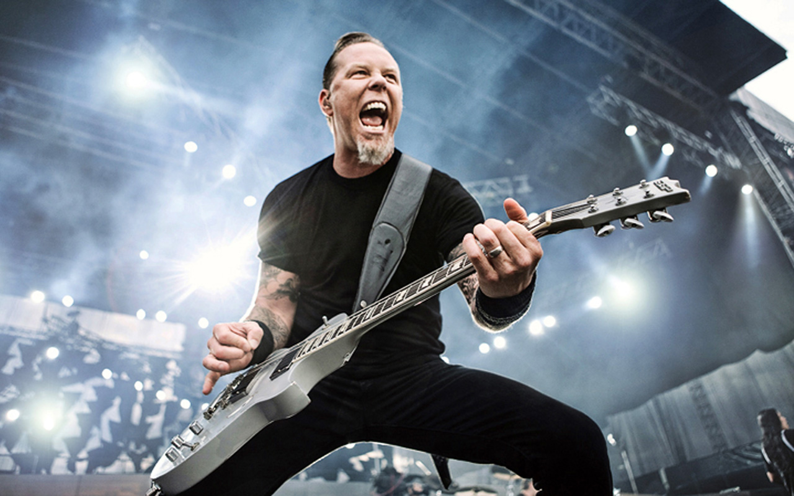

James Hetfield

James Hetfield
Here is a time line of James Hetfield's life:
- 1963 - Born in Downey, California
- 1981 - Metallica is formed
- 1983 - First Album, Kill 'Em All, was Released
- 1984 - Second Album, Ride The Lightning, was Released
- 1986 - Third Album, Master of Puppets, was Released
- 1988 - Fourth Album, ...And Justice for All, was Released
- 1990 - Won First Grammy for Best Metal Performance for "One"
- 1991 - Fifth Album, Self-titled "Metallica", was Released
- 1992 - During a concert in Edmonton, Alberta, Canada, James Hetfield accidently stepped into the path of a pyrotechnic on stage. This caught a whole side of his body on fire. He was rushed to the hospital and suffered from many 2nd and 3rd degree burns. He went through 6 weeks worth of rehabilitation in 4 days so he could get back on tour as quick as possible, but taking breaks from his guitar when necessary.
- 1993 - Live Album titled "Live Shit: Binge and Purge" was released
- 1996 - Sixth Album, Load, was Released
- 1997 - Married Francesca Tomasi
- 1997 - Seventh Album, Re-Load, was Released
- 1998 - Had His First Child, Cali Tee Hetfield
- 2000 - Had Second Child, Castor Virgil Hetfield
- 2000 - Had Third Child, Marcella Francesca
- 2002 - Went to Rehab for Drug and Alcohol Abuse
- 2003 - Eigth Album, St. Anger, was Released
- 2004 - Metallica's movie "Some Kind of Monster" was released in 2004, following some member's of the band's path through and after rehab.
- 2008 - Ninth Album, Death Magnetic, was Released
- 2009 - Inducted into Rock N' Roll Hall of Fame
- 2011 - Tenth Album, Lulu, was Released
- 2016 - Eleventh Album, "Hardwired... to Self-Destruct", was released.
"I choose to live, not just exist."
If you have time, you should know more about James Hetfield on James Wiki.